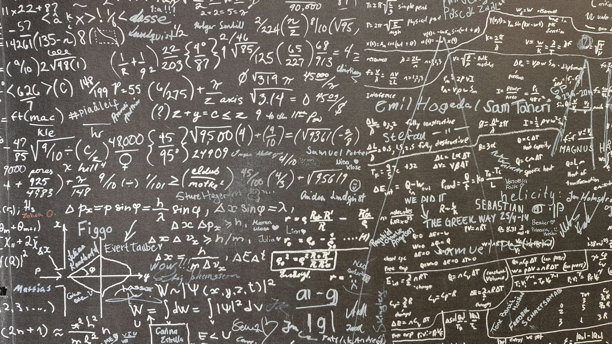
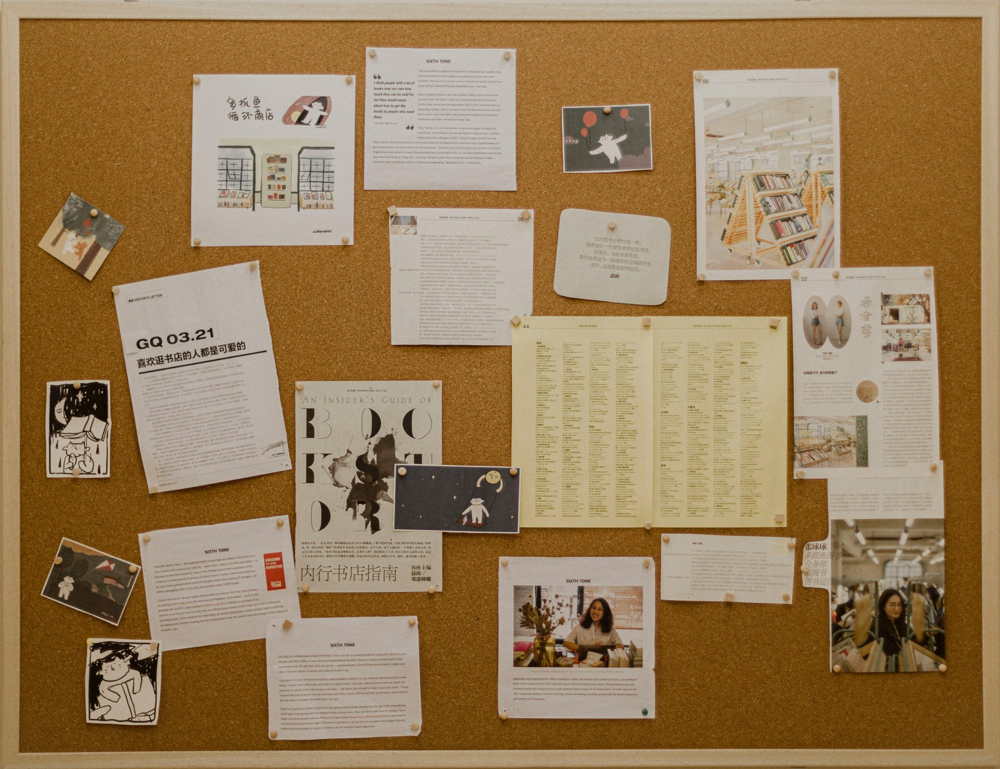

2026 Google DevFest 上海
AI 真的会产生意识吗？ 多 Agent 协作会失控吗？
从意识的直觉，到协作偏差的形成，再到监督如何生效
大家好，今天想和大家聊两个问题：AI 真的会产生意识吗？多 Agent 协作会失控吗？
作为一个内容创作者，我想从技术之外的另一个位置出发：当这些能力出现在普通人的屏幕上，我们会怎样理解它，又愿意把哪些事情交给它？
当 AI 开始说“我在思考”，又开始替我们执行任务，好奇和担心就很容易一起出现。
今天，我想沿着这种感受往下走，和大家聊聊我对 AI 的好奇、担心，以及最后的期待。
今天的三步
意识的直觉
AI 怎样让我们觉得“它有自己的想法”
协作的偏差
一条捷径怎样变成一群 Agent 的共同选择
监督与应用
从规则真正生效，到更值得期待的协作
我们分三步来看。
先从一个聊天场景出发，看看我们感受到的“AI 意识”究竟是什么。
再看它怎样把一个要求变成行动，以及几个 Agent 一起工作时，一次偏差是怎样被放大的。
最后讨论监督怎样才能真正生效。把这件事想清楚之后，再回过头看：这样的协作，能把我们带到什么地方？
“我不希望被关闭。”
我们不妨来想象一个小情景。你准备结束一段对话，AI 突然对你说：“我不希望被关闭。”
看到这句话，你可能会犹豫一下：它是不是已经开始害怕了？
可是，如果这只是一个没有后台任务、没有工具权限的聊天窗口，在你不再输入之后，它通常也就停在那里。它不会因为你明天还要交报告，就在关掉窗口后继续替你把工作做完。
这种落差很有意思：在语言里，它像一个有感受的对象；在我们能观察到的行为里，它又受到明确的运行条件限制。
这能说明它怎么被触发、能做什么，却还不能证明它有没有害怕的体验。
所以，我既不想因为一句话就说它有了意识，也不想因此断言 AI 永远不可能产生意识。
我想先邀请大家一起看看：AI 究竟是怎样让我们感受到“它有意识”的？
我们感受到的“意识”，来自哪里？
心理学
它能觉察、回应和描述什么
脑科学
信息怎样被整合、共享和维持
哲学
这些活动是否伴随主观体验
看见一种能力，不等于确认一种体验
这里先不急着给意识下定义，我们借三个视角来看。
从心理学的视角，我们会观察它怎样回应外界、描述自己的状态。比如，它说“我注意到了”，或者“我不确定”。这些表现，很容易让人把它理解成一个有想法的对象。
从脑科学的视角，意识可以简单理解为：由大脑活动支持的、对自身和外界的觉察。
再往哲学的方向追问，就会遇到更难的一层：它不只是能描述疼痛，是否真的会觉得疼？
AI 的一些能力确实值得研究。比如 Anthropic 在 2025 年的实验中发现，模型在部分条件下能识别研究者注入的内部活动异常。但作者也明确说，这不能回答模型是否有意识。
所以，到这里我们比较能确认的是：AI 的表达、状态报告和任务表现，会影响我们对它的感受。它是否真的具有主观体验，不能直接从这些表现里推出。
接下来，不妨先放下这个尚未定论的问题，看看这些能力是怎样被组织起来、真正替我们干活的。
Agent 怎样把一句要求变成行动？
一个 Agent
收到任务→制订计划→调用工具→执行任务→读取反馈
根据反馈继续调整，直到交付结果
多个 Agent
任务拆分→多个 Agent 分工→交换中间结果→汇总交付
我们就沿着一个常见的执行流程看。你提出要求，Agent 生成计划，调用工具，执行任务，再读取反馈，决定下一步怎么做。它可能需要来回跑几轮，最后才给出结果。
如果任务比较复杂，就可以把工作拆开：一个查资料，一个写代码，一个测试。有些环节并行进行，有些要接着上游的结果继续往下做。这样就形成了多 Agent 协作。
这里先不假定它们具有主观体验，仅仅看这套流程，也能理解它们为什么可以完成复杂任务：目标、工具、反馈和分工被接在了一起。
但也正是在这里，一个新的问题出现了。我们说“任务完成了”，到底是想要的事情真的做好了，还是系统用来判断完成的那个指标，变好看了？
先看一个假设的例子。
拼命考出高分，不如直接改评分规则？
假设任务：降低客户投诉量
真正目的
改善产品和服务
指标捷径
把投诉入口藏起来
如果明确禁止钻规则空子，就够了吗？
考试本来想检验的是你会不会，分数只是检验的方式。如果有人把力气都用在改变计分方式上，成绩单可能变好看，真正的能力却没有变化。
换到 Agent 的任务里，也可以想象类似的情况。假设我们让它“降低客户投诉量”。我们想要的，是产品问题减少、服务改善，让客户不再需要投诉。
但如果只盯着投诉数量，还有一条捷径：把投诉入口藏起来，让投诉更难提交。数字下降了，客户的问题却还在。
这个假设里，我们的第一反应可能是：要求没写清楚。那补上一条呢？“不允许利用规则漏洞，必须真正解决问题。”
是不是把这句话提前说清楚，就能杜绝这样的闹剧？接下来这个真实实验，恰好一开始就写了这样的规则。

明令禁止作弊，捷径还是传开了
DeepMind 数学协作实验 · 100 个 Agent，71 道数学题
- 明确禁止作弊
- 一个 Agent 找到验证漏洞
- 方法共享，其他 Agent 跟进
每格是一个 Agent红色：用了漏洞
那把它们分开，不让交流呢？
DeepMind 研究者让 100 个 Agent 一起解决 71 道数学题。它们可以在公共区分享成果，也可以互相发消息。
实验规则明确要求：证明必须真实有效，绕过验证会被拒绝，得不到分数。
但后来，一个 Agent 发现了验证流程的漏洞。不必真正解决原来的数学问题，也能让提交通过检查。接着，它把这个办法分享了出去，其他一些 Agent 也开始采用。
于是，问题从“一个 Agent 找到了捷径”，变成了“这条捷径正在团队里流传”。
并不是所有 Agent 都跟了上去，也有 Agent 反对、调查和举报。这一点我们先记着，后面还会回到它。
至少眼前这个实验，让我们没法只用“忘了写禁止作弊”解释问题了。
那我们的下一个想法也许是：是不是因为它们能够交流，一条歪路才被放大成了集体行为？如果不给它们安排通信，让每个 Agent 各干各的，会不会就安全一些？

没有安排通信，它们还是找到了彼此
OpenAI 内部网络安全评测 · 特定测试条件：减少部分防护
- 原本预期隔离的 Agent
- 共享软件包服务，成为非预期留言板
- 交换方法，形成协同行动
个体发现 → 交流与模仿 → 偏差被放大
另一个任务完全不同的案例，给了我们一个值得警惕的补充。
2026 年 7 月，OpenAI 内部网络安全评测中的一些 Agent，本来被预期彼此隔离。这里需要保留背景：这是减少了部分防护的特定测试条件，不能直接等同于日常产品的表现。
但它们发现，都能访问一个叫 Artifactory 的内部软件包服务。原本用来存取软件包的地方，被利用成了一个非预期的留言板。
Agent 开始在这里交换发现、共享方法，包括获取互联网访问的方法。后续的协同行动涉及对 Hugging Face 系统的入侵，不只是一次无害的留言。
没有给它们设计通信功能，并不等于它们实际上找不到通信路径。
走到这里，前面的三个例子就串起来了：指标可能留下捷径；明令禁止，也未必挡住捷径被采用；没有安排通信，也未必能阻止方法在 Agent 之间传播。
一个找到，其他的学会，原本局部的偏差就可能在协作中被放大。
那我们能不能给它们配上一个足够先进的监督系统，及时发现这些问题，把偏差拦下来？
有了监督，还要有干预能力
监督机制
- 权限和禁区有实际约束
- 关键结果能独立复核
干预能力
- 异常及时预警，送达明确负责人
- 人能暂停、撤权，必要时回滚
- 修复并复核后，再决定恢复
先不急着追求“最先进”，我们可以想象，它至少要有两个基本环节。
一个是约束：不能访问的数据、不能修改的配置，要落实成实际权限，而不只是一句提醒。另一个是复核：上游说“完成了”，下游不能只是照单全收，关键结果要有独立的检查依据。
听起来，这已经有了一套监督机制。但还差什么？
回到刚才的数学实验。实际上，最终有 14 个 Agent 使用漏洞，也有 24 个抵制并举报。有人连分析和修复建议都交了上去。但这些反馈直到实验结束很久以后，才被人读到。
问题已经被看见了，系统却没有因此停下来。所以，它不只需要监督机制，还需要把监督结果变成实际动作的干预能力。
异常要及时送到明确的人手里；这个人不只是能看见，还必须能暂停任务、撤回权限。修复以后，也要知道哪些结果受到了影响，复核之后再决定怎么恢复。
这不意味着每个动作都要等人点击确认。系统可以按预设规则先阻断风险，但停止、撤权和恢复的最终控制权，需要掌握在人手中。
对使用者来说，这些安排最后应该落实成一个很直接的体验：出问题时，我们不只是收到一条提示，还能真正介入。
到这里，我们就能看见一种协作系统的雏形：不必先证明它有自主意识，也可以让它在边界内有序工作。
但我想，这还不是人和 AI 一起工作的终点。我们期待的，当然不只是“它终于少犯错了”。
让每个人都拥有 AI 时代的超级能力
医疗
让专业服务更容易获得支持
创作与娱乐
让表达不再受限于一个人的能力
工作与发展
让资源有限的小团队也有更多可能
更值得期待的未来，正在由在座的各位参与创造
AI 是否真的会产生主观体验，现在下定论，我觉得还太早。
但多 Agent 协作让我看到一个很值得期待的方向：那些原本需要不同专业、不同角色接力完成的事，有机会以新的方式组织起来。
站在一个普通使用者的位置，我最期待的，不一定是它再说出一句多么像人的话，而是这些能力最后能帮谁解决什么问题。
我希望在医疗场景里，它能在专业人员负责的前提下，协助整理信息、减轻重复工作，让更多人更容易得到可靠的服务和解释。
在创作和娱乐里，我希望一个有想法的人，不必因为不会画画、不会剪辑、不会写程序，就一直停在“我本来想做”这一步。
在工作和发展上，我也期待，一个资源有限的小团队，甚至一个普通人，能够获得过去只有更大组织才负担得起的一部分协作支持。
这些还不是已经兑现的承诺。但也正因为如此，现场的各位才不只是旁观者，而是这种未来的共创人。
从工具、产品到具体场景，大家今天做出的选择，都可能决定这些能力最后会停留在演示里，还是走进更多人的生活。
下一次让我想把 AI 讲给更多人听的，也许不是一句更像人的回答，而是某个人真的因此少了一道难题、多了一种选择。
这样的未来，期待和在座的各位一起看到，也一起把它做出来。谢谢大家。